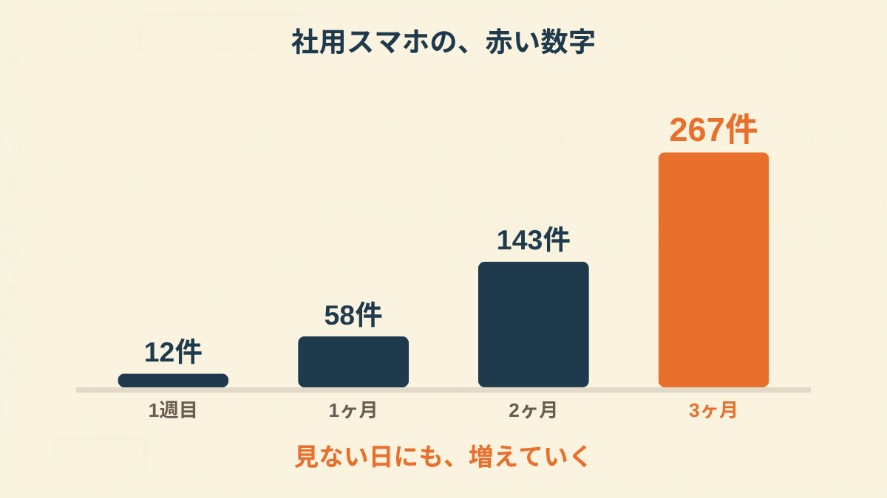
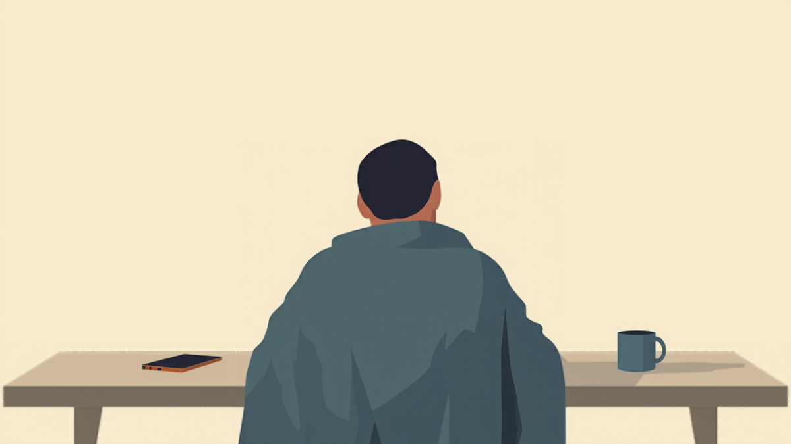
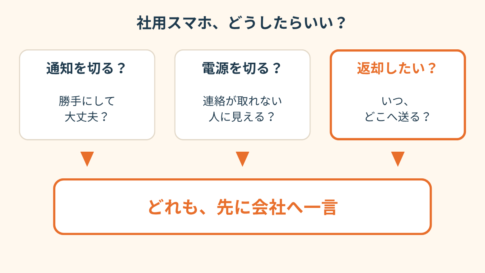
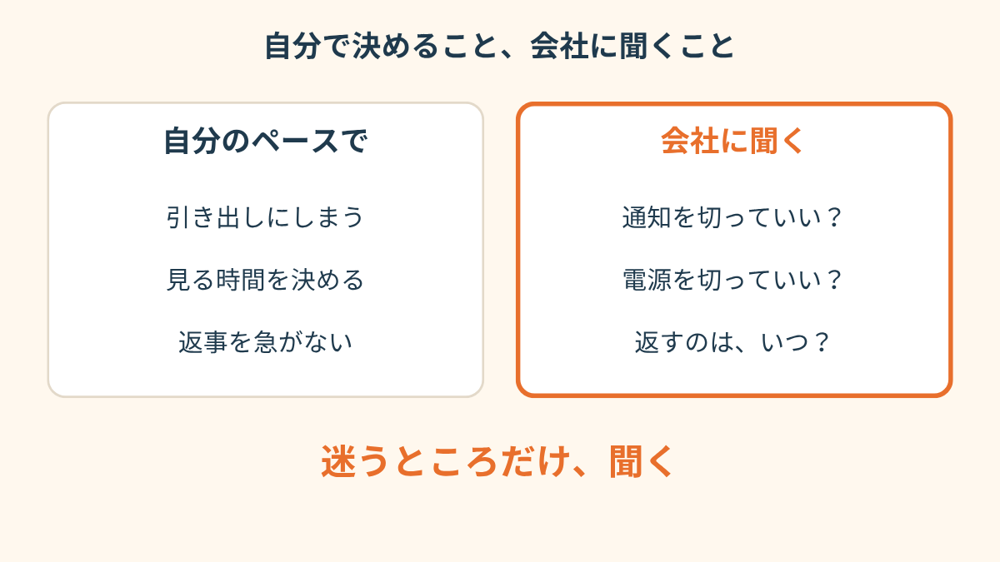
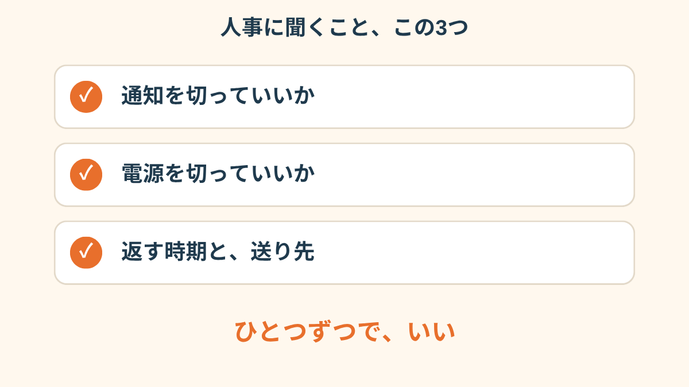
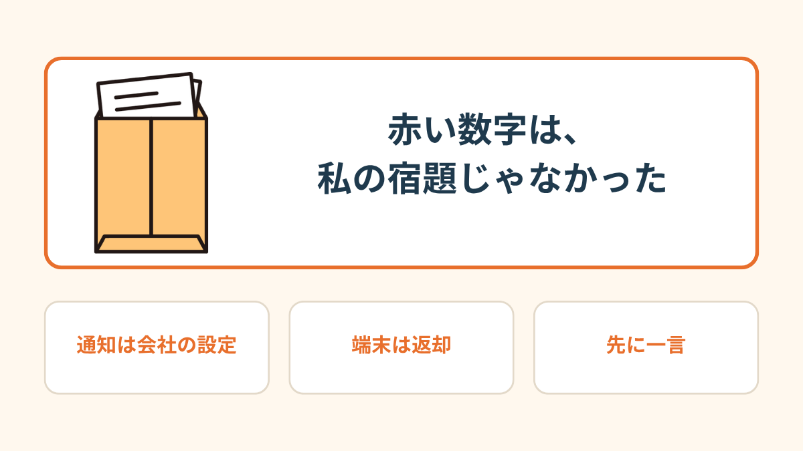
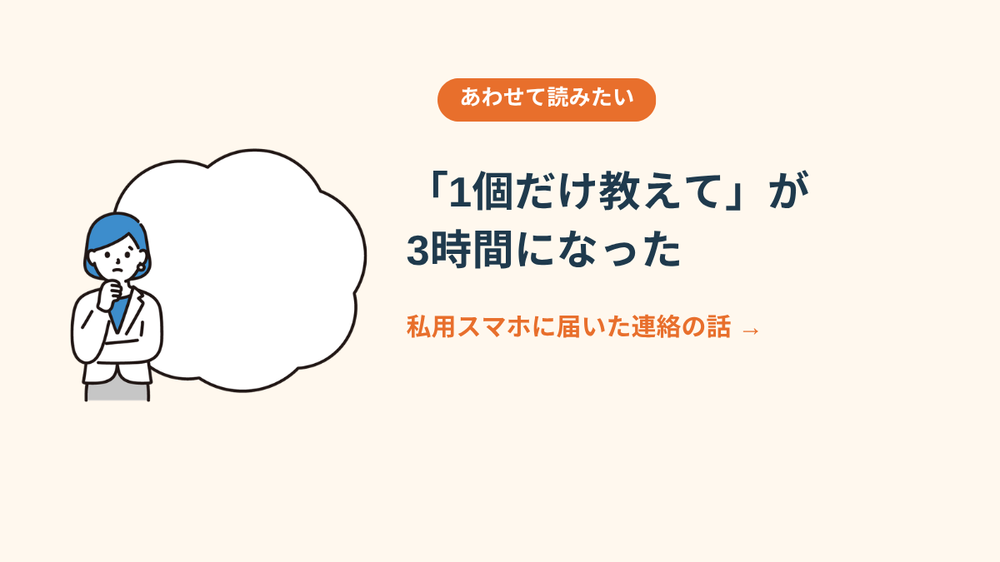

社用スマホの端に、赤い丸がついていた。
数字は「267」。
休職して3ヶ月。私はそれを裏返して、引き出しの奥に入れた。
PR


引き出しに入れた、会社のスマホ
休職が決まった日、会社から借りているスマホは、返さないまま家に持って帰ってきた。誰にも何も言われなかったから、そのままでいいんだと思っていた。
社内チャットのアプリは、入れっぱなし。最初の週に開いたときは、赤い数字は12だった。開いたら、誰かの顔が浮かぶ気がして、閉じた。
1ヶ月たつと58。2ヶ月で143。数字は、私が見ていない日にも勝手に増えていく。

見ない日にも、数字は増えていった

数字そのものより、「見ていない自分」を責める気持ちのほうが重くなっていく、という方もいるようです。まめざる

裏返したまま、机の端に置いた日
「通知音が鳴るたびに、体がびくってなってました。中身を見てないのに、鳴るだけで『何か頼まれてる』って思っちゃって」
30代・男性（うつ病で休職・IT系の会社員）
電源を切ったら、連絡が取れない人になる気がして
切ってしまえば楽になる。分かってはいた。
でも、これは自分のスマホじゃない。会社のもの。勝手に電源を落として、あとで「あの人、連絡がつかない」と思われたら。通知だけ切るのは、いいのか。返したいけど、どこに送ればいいのか。
頭の中で、同じ3つがぐるぐる回った。

迷いは3つ。行き先は1つだった
i
ここに書いたのは、私の会社の場合の話です。貸与されたスマホの扱いは、会社ごとに違います。（2026年11月時点の情報です）
「切っていいかどうかより、『こんなこと聞いたら、やる気ないと思われる？』のほうが怖かったです。自分でも面倒くさいなって思うんですけど」
20代・女性（適応障害で休職・営業職）
相談の一コマ

相談者
電源を切ったら、「連絡のつかない人」って思われそうで。
まめざる
思われそう、というのは、誰の顔が浮かんでいますか。
相談者
上司と、同じチームの人たち。休んでるのに、って言われそうで。
まめざる
切る前に、人事に一言聞くという手もあります。
人事に、2行だけ送った
3ヶ月目の夜、私用のスマホでメールの下書きを開いた。最初は、事情の説明から書き始めて、2回消した。
最後に残ったのは、これだけ。
「休職中の○○です。貸与されている社用スマホの通知を切ってもよいでしょうか。お返しする場合は、いつ、どこへ送ればよいでしょうか」
送信を押してから、台所で麦茶を飲んだ。たった2行なのに、指が冷たかった。

決めること、聞くこと。分けたら軽くなった
返事は、拍子抜けするほど短かった
翌朝、返事が来ていた。
「ご連絡ありがとうございます。休職中は端末をお預かりしますので、同封の袋でお送りください。チャットのアカウントは、こちらで一時停止にしておきます」
読んで、力が抜けた。同時に、ちょっと悔しかった。アカウントを止め忘れていたのは、会社のほうだった。
267という数字は、私が放っておいた宿題じゃなかった。止められる人が、止めていなかっただけだった。
3ヶ月、引き出しの奥に押し込んで、夜中に検索して。かかった時間は、返事を読む10秒だった。
「私のところも、聞いたらあっさりでした。『あ、止めますね』って。聞くまでの時間のほうが、ずっとしんどかったです」
40代・女性（適応障害で休職・メーカー勤務）

聞くことは、この3つだけでよかった
i
「いまの自分の気持ちが、どのあたりにあるのか分からない」というときは、2問で答えられる
気持ちスキャン診断もあります。よかったら覗いてみてください。

赤い数字は、私の宿題じゃなかった

私用スマホに届いた、後輩の連絡の話 →
!
この記事は、実際にあった複数の話を組み合わせて書いたものです。貸与されたスマホや社内チャットの扱いは、会社の規模や運用によって違います。最終的には、会社の人事・総務や主治医、必要なら専門機関にご確認ください（2026年11月時点の情報です）。
Q. 休職中も、会社から借りているスマホは持っていていいのですか？
会社によって扱いが違います。休職中は返却を求める会社もあれば、そのまま預ける会社もあるようです。就業規則や貸与の書面に決まりがあることもあるので、人事や総務に確認するのが確実です（2026年11月時点の情報です）。
Q. 社用スマホの電源を切ってもいいですか？
一般に決まりは会社ごとに異なり、緊急連絡の手段として指定されている場合もあります。電源や通知を自分で切る前に、人事や上司に一言確認しておくと安心です。体調がつらいときは、主治医にも相談してみてください。
Q. 社内チャットの未読は、復職したら全部読まないといけませんか？
全部さかのぼって読むことを求められるとは限りませんが、これも会社ごとに違います。復職前の面談などのタイミングで、「休職中の未読はどう扱えばよいか」を人事や上司に聞いておく方法があります。
Q. 人事に聞くのが負担なとき、どうすればいいですか？
決まった方法はありません。休職中であること、聞きたいことの2点だけを短く書く方もいます。メールが重いときは、電話や、家族に代わりに連絡してもらう方法もあります。一人で抱えず、主治医や相談窓口に話してみてください。
PR


まずは無料で相談してみる
会社への聞き方も、うまく説明できなくて大丈夫です。一緒に整理していきましょう。
無料相談はこちら
この記事に、聞いてみたいことはありますか？
「自分の場合はどうなんだろう」と思ったことを、気軽に書いてみてください。いただいた質問は個別にお返事したうえで、匿名で記事にすることがあります。
お
おのざる
mimemime代表。就労支援の現場経験をもとに、障がいのある方の働く不安に寄り添う記事を執筆。